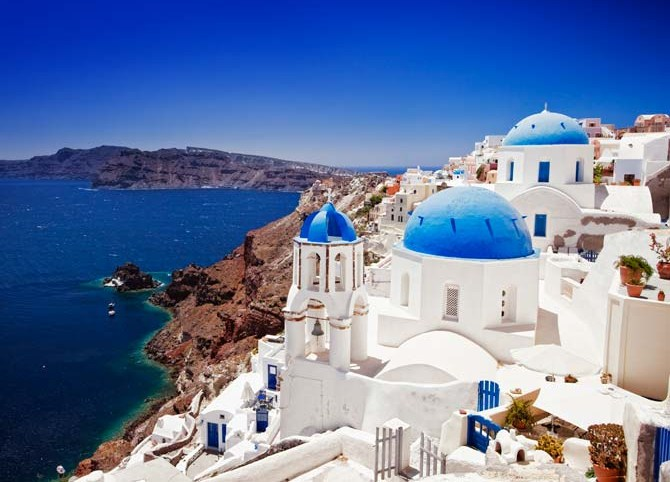

 Santorini, a nuestro entender, es la joya de las Cycladas. Es absolutamente diferente a todas las islas Cycladas o a cualquier isla del Egeo. Su configuración geológica le da esa belleza salvaje y única. La isla toma su forma actual tras hundirse la caldera del enorme volcán. Su capital es el pueblo de Thira y su principal puerto el de Acinios. Su suelo principalmente es volcánico. Habitada, al menos desde el 3000 a. de C. por los fenicios, tiene su apogeo del 2000 al 1600 a. de C., año que interrumpió su desarrollo debido a la tremenda y apocalíptica explosión del volcán. Existe una teoría, según la cual, en Santorini pudo encontrarse la perdida Atlántida. Existen algunos que así lo afirman. A los griegos, al menos, así les gusta creerlo. Santorini es un pueblo mediteráneo colgado sobre el acantilado con vistas a la Caldera y al mar Egeo